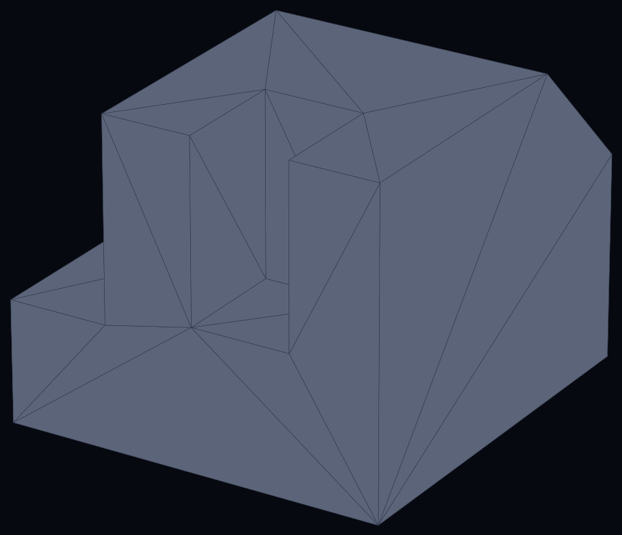
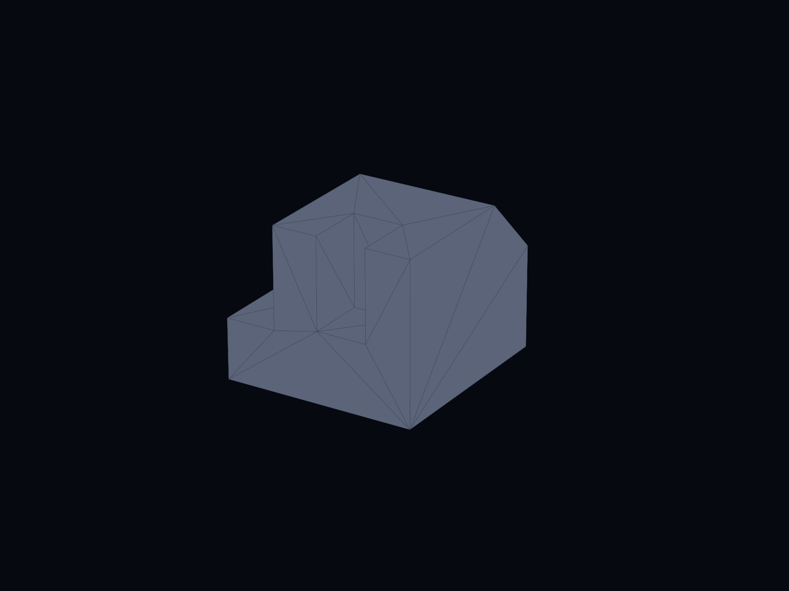
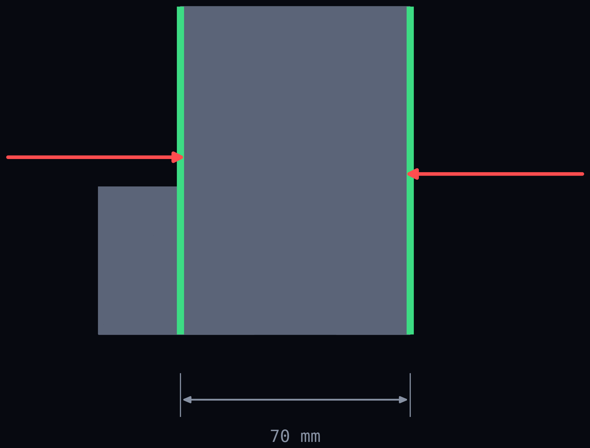
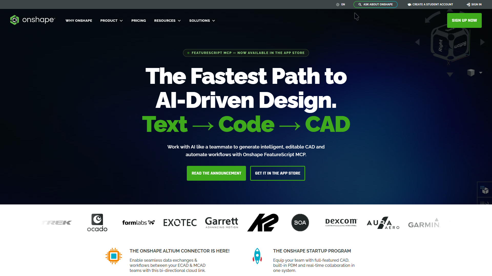
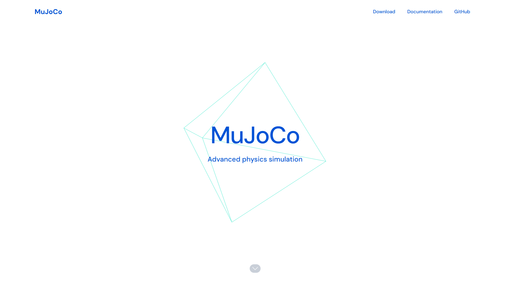
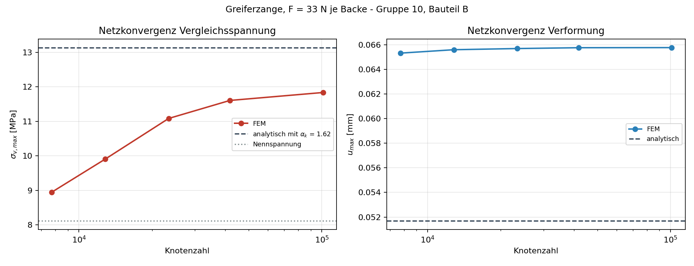
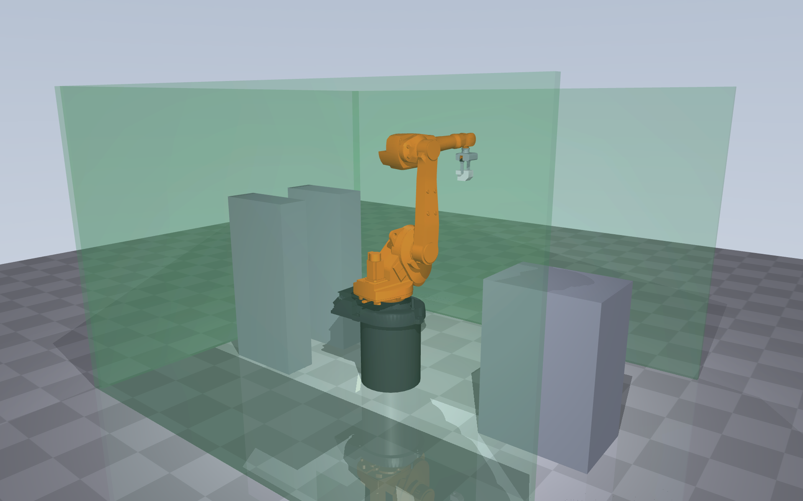

Product Design & Development · MRE WS 26/27
Robot Gripper
Part B
Elias
Viktoriia
Group 10
What we grip

95 × 100 × 80
bounding box, mm
PA 6
polyamide, soft · Ra 1.6
0.60 kg
528.5 cm³ — light
Where we grip

70 mm
two flat, parallel, opposed faces
6 200 mm²
contact area, smaller side
side access only
no undergripping on the buffer belt
Why this gripper
2-finger parallel jaws
Two flat faces, opposed. Friction is enough — no form fit, no custom kinematics.
Servo drive
Force is adjustable. PA 6 is soft and Ra 1.6 has to survive. No compressed air needed.
The price: rack and pinion is not self-locking. Power fails, part drops — so a holding brake is mandatory, not optional.
Toolchain
CAD + FEM
One parametric model, both of us in it live. FEM on the same model, no export break.

Calculations + report
Formulas, units and cross-references stay consistent. The report alone is 10 points.
Grip + motion study
Contact forces, so we can show the part does not slip — not just claim it.

One repo, two folders
You work in yours, I work in mine. We merge once, at the end.




Gazebo would work too — it just needs a ROS stack we have no other use for here.
Two hard dates
Interim report
26 Nov 26
Thursday, 17:50, on site
Final review
15 Jan 27
Friday, 16:10, on site
Proposal — two halves that each stand alone
Viktoriia
Design & analytical proof
V1Gripping concept + sketch
V2Gripping force + drive sizing
V3Jaws + soft pads (CAD)
V4Analytical stress + deflection
Elias
System & numerical proof
E1Robot selection + placement
E2Gripper body, drive, changer
E3Assembly drawing + BOM
E4Motion + collision study
E5FEM + 3D-printed check
You design the jaws and prove them by hand. I prove the same jaws numerically. Two independent paths, one part.
The route
September to January
M0 · Kick-off
14 – 20 Sep
M1 · Concept, freeze
21 Sep – 04 Oct
M2 · CAD closes
05 Oct – 01 Nov
M3 · Analytical + FEM
02 – 22 Nov
M4 · Drawing, sim, print
23 Nov – 20 Dec
Christmas break
21 Dec – 03 Jan
M5 · Merge + submit
04 – 11 Jan
SEP
OCT
NOV
DEC
JAN
Interim report
Final review
Tell me what you'd change.
The packages are cut to be swappable. Say it now, not in December.
github.com/eliasbitsch/PDE-Robotergreifer